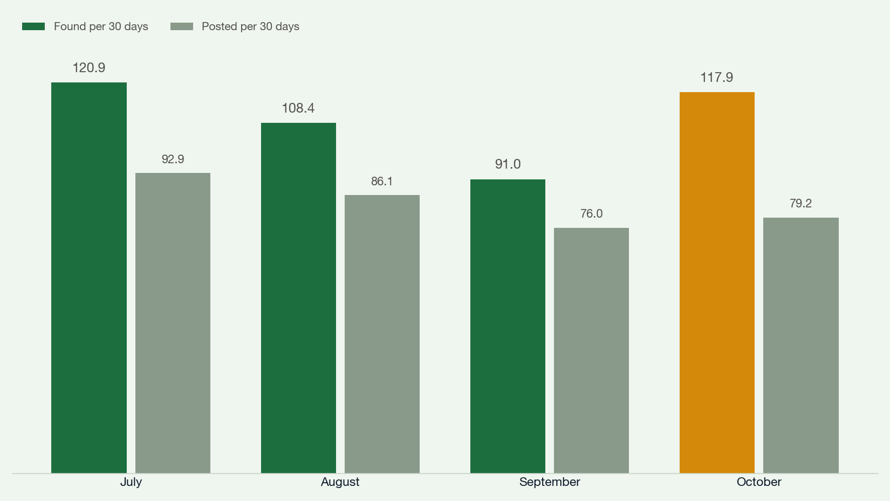
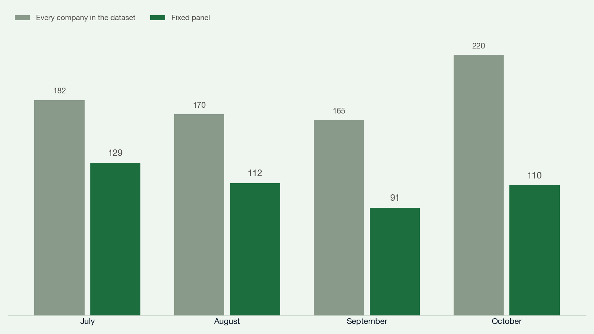
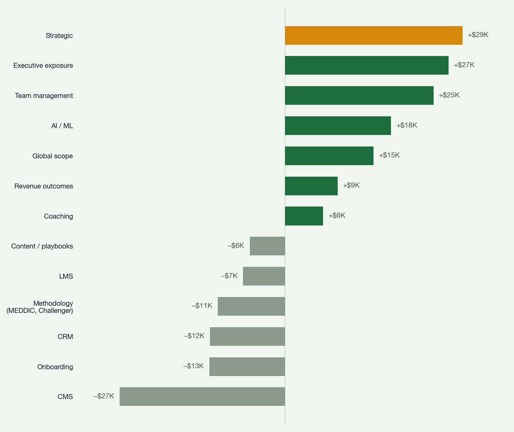

October payrolls jumped to +165K, from +60K in September. At the same 184 companies we've tracked since June, new enablement roles stayed inside one range all four months, between 91.0 and 120.9 per 30 days. That held through a slow September and a busy October for the wider job market.
By Benjamin Bowles · Enablement Index
If you're looking for an enablement role, companies kept posting them within the same range all summer and into October. If you're hiring, you're competing for people at that same pace. For the function, enablement hiring stayed in its range while hiring across the economy went up and down.
Nonfarm payrolls came in at +165K in October, after +60K in September (first reported as +29K). Professional and business services added +70K and health care +55K. Information employment was little changed (−1K). Unemployment was 4.1%, and average hourly earnings were 3.1% higher than a year earlier.
Sales postings didn't share the jump. Indeed's sales postings index ended October at 92.49, still below its February 2020 baseline. Total postings (103.79) sat just above baseline, and new postings were −6.6% year over year.
At the 184 companies in our fixed panel, new enablement roles ran at 120.9 per 30 days in July, 108.4 in August, 91.0 in September, and 117.9 in October. October landed between September's low and July's high. It didn't break out.
The broad economy, the sales floor, and the enablement layer above it · October 2026
Payrolls jumped in October. Sales postings stayed below baseline. Enablement held inside its summer range.
New enablement roles per 30 days, by when we found them and when the employer posted them, fixed panel of 184 companies tracked since June

At the companies we've tracked since June, new enablement roles ran at 120.9 per 30 days in July, 108.4 in August, 91.0 in September, and 117.9 in October. September was the low and July the high, and October sat just under July. Payrolls swung over the same stretch, from +60K in September to +165K in October. Enablement held its range through both.
By the employer's posting date instead, October ran at 79.2 per 30 days, inside that measure's own summer range (76.0 to 92.9) but nearer the low end. Both measures put October inside the summer range. Month-to-month moves this size don't clear the noise in our checks, so we read the range and don't call a direction.
Fixed panel: 184 of 317 companies in the dataset, those with a role first seen before July 1, 2026. The panel is fixed on June presence, so it leaves out companies that start hiring later, and it may drift down as June's busiest employers cool, which would make later months look lower than they are. Rates are roles per 30 days of data covered, not seasonally adjusted. The snapshot's last sweep was October 28, so October covers 28 days by date found and 25 by date posted. "Posted" uses employer-reported posting dates (69% of panel roles carry one; Greenhouse rarely does).
New enablement roles found per month, every company in the dataset vs the fixed panel of 184

Across every company in the dataset, new enablement roles jumped from 165 in September to 220 in October. On the fixed panel they went from 91 to 110. Of the 55 extra roles, 36 came from companies that joined the dataset after June. Some of those are boards we added, and some are companies posting an enablement role for the first time. We can't separate the two, so we don't read either as new demand.
Issue 04 used a same-company base, which re-forms every month as companies join. The fixed panel holds the company list still, so a change from one month to the next comes from hiring at the same employers. On that base September looked flat (128 new roles); on the fixed panel it was the summer low. We'll report the fixed panel each month as the lead demand read.
Every company: all companies with a role in the dataset. Fixed panel: the 184 with a role first seen before July 1, 2026. Counts are roles first seen in each month, not rates, so October (28 days of data) is not scaled up. Earlier months can shift slightly as postings are deduplicated.
Median comp premium by JD signal vs. roles without it · n=711

Across 711 roles with listed comp and full JD text, strategic language (+$29K) and executive exposure (+$27K) carry the largest premiums, followed by team management (+$25K), AI (+$18K) and global scope (+$15K).
JDs that name a CMS (−$27K) or a CRM (−$12K) pay less. These are cross-sectional correlations: a JD mentioning strategy or executives may differ in other ways too, including company size and seniority.
Premium = median comp for roles whose JD mentions a signal minus median comp for roles whose JD doesn't, across 711 clean roles with listed comp and full JD text. Cross-sectional correlations, not controlled experiments. Signals often track seniority; this chart does not hold seniority steady.
JDs that say "strategic" pay more. The gap is widest at IC.
Within the same band, the premium is largest at IC and smaller at Manager and Lead. Director+ has too few roles without the word to measure. The all-levels figure is bigger than any single band's, which fits "strategic" also tracking seniority.
October payrolls came in at +165K, after +60K in September. The Indeed sales index (92.49) stayed below its February 2020 baseline.
At the 184 companies tracked since June, new enablement roles ran between 91.0 and 120.9 per 30 days over the summer and 117.9 in October, inside that range.
Whether October's bounce reaches enablement hiring is the thing to watch in Issue 06. The same 184 companies, with a full month of November data, will show whether enablement stays inside its range or breaks out of it.
The dataset covers 1,247 postings with "enablement" or related GTM-training titles, listed on public applicant tracking systems (Greenhouse, Lever, Ashby, SmartRecruiters, Workable, Rippling, Workday, iCIMS) and company career sites, first seen through the last sweep on October 28, 2026. After removing duplicate multi-city postings and engineering or infrastructure roles, 1,072 made the clean set, and 711 list both compensation and full JD text, forming the analytical sample. Comp is the midpoint of the listed range. Fixed-panel demand counts roles at the 184 companies whose first role in the dataset appeared before July 1, 2026; rates are roles per 30 days of data covered, not seasonally adjusted. Premiums are the median comp of roles whose JD mentions a signal minus the median of roles whose JD doesn't. These are cross-sectional correlations, not controlled experiments. Market context from BLS and Indeed Hiring Lab.
Sources: U.S. Bureau of Labor Statistics, Employment Situation (Current Employment Statistics and Current Population Survey). Indeed Hiring Lab Job Postings Tracker. Enablement Index dataset as of October 2026. Compensation figures reflect salaries listed on postings. n = 1,247 postings; n = 1,072 clean roles; n = 711 with listed comp and full JD text.
A full November for the fixed panel, and whether October's bounce reaches enablement hiring.